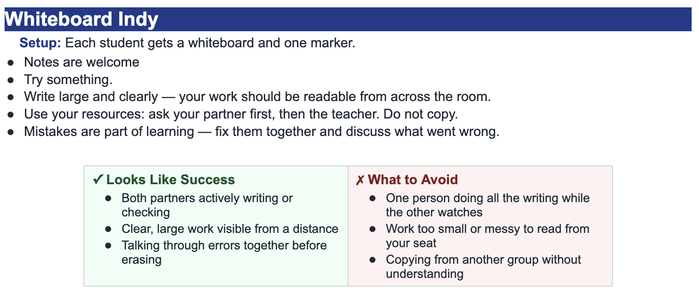

Find the derivative of \(f(x)=x^8-5x^3+2\).
Use the power rule on each power term. The constant derivative is 0.
\[ \frac{d}{dx}(x^8)=8x^7 \] \[ \frac{d}{dx}(-5x^3)=-15x^2 \] \[ f'(x)=8x^7-15x^2 \]Rewrite first, then differentiate: \(g(x)=4\sqrt{x}-\dfrac{3}{x^2}\).
Rewrite radicals and quotients using exponents.
\[ g(x)=4x^{1/2}-3x^{-2} \]Apply the power rule to each term.
\[ g'(x)=4\left(\frac12\right)x^{-1/2}-3(-2)x^{-3} \] \[ g'(x)=2x^{-1/2}+6x^{-3} \]Find the derivative of \(h(x)=7x^{3/2}-2x^{-4}\).
Use the power rule with fractional and negative exponents.
\[ h'(x)=7\left(\frac32\right)x^{1/2}-2(-4)x^{-5} \] \[ h'(x)=\frac{21}{2}x^{1/2}+8x^{-5} \]If \(y=5x^6-2x^2+9\), find \(y'\) and evaluate \(y'\) when \(x=1\).
First find the derivative.
\[ y'=30x^5-4x \]Now substitute \(x=1\).
\[ y'(1)=30(1)^5-4(1)=26 \]The derivative value is \(26\).
Rewrite first, then differentiate: \(p(x)=\dfrac{3}{x^5}+6\sqrt[3]{x^2}\).
Rewrite each expression using exponent notation.
\[ p(x)=3x^{-5}+6x^{2/3} \]Apply the power rule.
\[ p'(x)=3(-5)x^{-6}+6\left(\frac23\right)x^{-1/3} \] \[ p'(x)=-15x^{-6}+4x^{-1/3} \]A student says, \"The derivative of \(x^5\) is \(x^4\) because the exponent goes down by 1.\" Correct the mistake.
The student remembered only part of the power rule.
The power rule says to multiply by the original exponent and then subtract 1 from the exponent.
\[ \frac{d}{dx}(x^5)=5x^4 \]The missing factor is \(5\).
Find the derivative of \(r(x)=-2x^{-3}+5x^{1/2}-4\).
Differentiate each term separately.
\[ r'(x)=-2(-3)x^{-4}+5\left(\frac12\right)x^{-1/2}-0 \] \[ r'(x)=6x^{-4}+\frac52x^{-1/2} \]If \(f(x)=3x^4-8x+1\), find \(f'(x)\), then find \(f'(2)\).
First find the derivative.
\[ f'(x)=12x^3-8 \]Now evaluate at \(x=2\).
\[ f'(2)=12(2)^3-8=96-8=88 \]A position function is \(s(t)=t^4-6t^2\). Find the velocity function \(v(t)=s'(t)\), then find \(v(3)\).
Velocity is the derivative of position.
\[ v(t)=s'(t)=4t^3-12t \]Evaluate at \(t=3\).
\[ v(3)=4(3)^3-12(3)=108-36=72 \]Find the derivative of \(m(x)=2x^3-x^2+5x-7\).
Use the power rule term by term.
\[ m'(x)=6x^2-2x+5 \]The constant term \(-7\) has derivative \(0\).
Rewrite first, then differentiate: \(a(x)=\sqrt[4]{x^3}+\dfrac{2}{\sqrt{x}}\).
Rewrite both terms using exponents.
\[ a(x)=x^{3/4}+2x^{-1/2} \]Apply the power rule.
\[ a'(x)=\frac34x^{-1/4}+2\left(-\frac12\right)x^{-3/2} \] \[ a'(x)=\frac34x^{-1/4}-x^{-3/2} \]Find the derivative of \(b(x)=9x^{-1/2}-4x^{5/3}\).
Use the power rule with each rational exponent.
\[ b'(x)=9\left(-\frac12\right)x^{-3/2}-4\left(\frac53\right)x^{2/3} \] \[ b'(x)=-\frac92x^{-3/2}-\frac{20}{3}x^{2/3} \]Find the derivative of \(c(x)=\dfrac{6}{x^2}-\dfrac{8}{\sqrt{x}}\). Leave your answer using exponents.
Rewrite the function using exponent notation.
\[ c(x)=6x^{-2}-8x^{-1/2} \]Differentiate with the power rule.
\[ c'(x)=6(-2)x^{-3}-8\left(-\frac12\right)x^{-3/2} \] \[ c'(x)=-12x^{-3}+4x^{-3/2} \]Find the slope of the tangent line to \(f(x)=x^4-2x^2\) at \(x=1\).
The slope of the tangent line comes from the derivative value.
\[ f'(x)=4x^3-4x \] \[ f'(1)=4(1)^3-4(1)=0 \]The tangent-line slope is \(0\).
Find the derivative of \(d(x)=12x^7-5x^4+\dfrac{9}{x}\).
Rewrite the quotient term first.
\[ d(x)=12x^7-5x^4+9x^{-1} \]Differentiate each term.
\[ d'(x)=84x^6-20x^3-9x^{-2} \]Find \(k'(3)\) if \(k(x)=x^3-9x^2+6x\).
First find the derivative.
\[ k'(x)=3x^2-18x+6 \]Evaluate at \(x=3\).
\[ k'(3)=3(3)^2-18(3)+6=27-54+6=-21 \]Find the derivative of \(w(x)=(2x^4-3x^2+1)+\left(5x^{-2}-x^{1/2}\right)\).
Differentiate all terms. Parentheses are grouping only.
\[ w'(x)=8x^3-6x+5(-2)x^{-3}-\frac12x^{-1/2} \] \[ w'(x)=8x^3-6x-10x^{-3}-\frac12x^{-1/2} \]The derivative of \(f(x)=ax^4\) is \(f'(x)=20x^3\). Find the value of \(a\).
Differentiate the general function.
\[ f'(x)=4ax^3 \]Match it to the given derivative.
\[ 4a x^3=20x^3 \] \[ 4a=20 \quad \Rightarrow \quad a=5 \]Create a function with one positive power, one negative power, and one fractional power. Then find its derivative.
Answers will vary. One possible function is
\[ f(x)=x^4+3x^{-2}-2x^{1/2} \]Differentiate term by term.
\[ f'(x)=4x^3-6x^{-3}-x^{-1/2} \]A student says, \"The derivative of a constant is the same constant.\" Use an example to explain why this is incorrect.
A constant does not change, so its rate of change is 0.
For example, if \(f(x)=7\), then
\[ f'(x)=0 \]The derivative of any constant is \(0\), not the original constant.